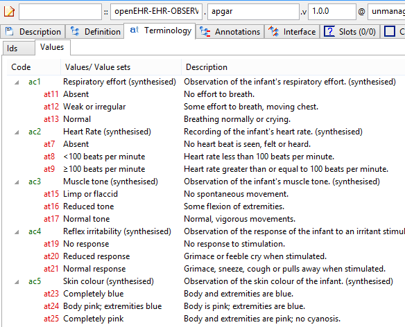

ADL Workbench (AWB) User Guide
| © 2020 The openEHR Foundation | |
|---|---|
The openEHR Foundation is an independent, non-profit foundation, facilitating the sharing of health records by consumers and clinicians via open specifications, clinical models and open platform implementations. |
|
Issuer |
|
Keywords |
ADL Workbench, archetype, template, clinical model, ADL |
Licence |
|
Support |
Issues: Problem Reports |

Acknowledgements
1. Overview
1.2. What is the Workbench?
The ADL Workbench (AWB) is a compiler and IDE for working with the archetypes and templates written in the Achetype Definition Language (ADL), and based on any reference model, including openEHR, ISO 13606 and CIMI. The latest version of the archetype formalism makes it one of the most powerful domain modelling tools available. Create models of clinical content (archetypes), data set definitions (templates), add terminology bindings and translations and then visualise and generate fully compiled output form in ADL, JSON, XML, YAML or ODIN.
1.3. News
-
Full BMM support for generic types including through inheritance
-
Enumerated type support
-
Support for regular
C_PRIMITIVE_OBJECTstructures -
GitHub integration and new smart archetype repository management
-
CIMI archetypes and templates supported
-
Many new visualisation and usability features
-
New governance meta-data supported
-
Tuple syntax replaces domain specific syntax for quantities, ordinals etc
-
ADL2 internal coding system uses id-codes, at-codes and ac-codes
-
Value sets now defined in archetype terminology
-
All code bindings are URIs
-
Standard lifecycle states
-
Fully independent of specific reference models - can load any RM
-
ADL 1.4 archetypes fully converted to ADL 2, including with extraction and synthesis of value sets
-
Supports namespaced archetype identifiers
1.4. Roadmap
-
Support for ADL 1.4 OPT generation
-
Support for ADL 2 template form visualisation
-
Live terminology service integration
-
Full visual editing
1.7. Source Code
The source code can be accessed from the adl-tools GitHub repository.
2. Installation Notes
2.1. Mac OS X
ADL Workbench will be installed in your Applications folder, under a folder called openEHR.
When you double-click the ADL Workbench icon, it will start up inside X11 or XQuartz.
2.2. Linux
The Linux version of ADL Workbench requires GTK+ 2.4.0 or above. You can check by typing this command:
pkg-config --modversion gtk+-2.0
The command should succeed and the version number of GTK+ should appear. If it is not 2.4.0 or above then you need to install GTK+ 2.4.0.
After downloading, create a directory, extract the contents of the archive, and run adl_workbench. This is normally done as follows:
$ mkdir awb # create a directory if never done before
$ cd awb
$ tar xvjf ../archive_file_name # extract the files3. Getting Started
3.1. Overview
Two resources need to be configured at first time used of the ADL Workbench. The first is the 'reference models' (RMs) which are imported in the form of schema files expressed in the openEHR 'basic meta-model' (BMM) format. Multiple RMs can be imported, enabling comparison of models, classes as well as archetypes based on different models.
The second resource that must be configured is the 'profiles' that define where archetypes and templates are to be found.
3.2. Basic Configuration
3.2.1. Setting RM Schemas
At installation, the AWB is normally set up to point to a set of reference model schemas copied from the openEHR reference models Git repository. You may want to check which Reference Model schemas are enabled initially. Choose RM Schemas > Configure Schemas to do this. The dialog looks as follows.
You can check all RM schemas that apply to archetypes in any repository you might define. The only time you would leave a schema unchecked is if you have more than one version of the same schema and you want to choose a specific one. If multiple versions of the same schema are loaded, the most recent one will be chosen for use with archetypes based on the corresponding reference model.
See the Tool Configuration section for details on configuring RM schemas.
3.2.2. Setting up archetype repositories
The first time you start the tool if you are a new user, you will be asked for a repository. The following dialog will appear:

The section on Obtaining Archetypes describes how to proceed.
3.3. Using the Tool
3.3.1. Docking
The AWB layout is docking-based, which means that the key components are all dockable 'tools'. This screenshot shows multiple editor tabs, the Library tool, and various minimised tools at the bottom and right hand side. Docking can be used to arrange editor tools side by side, and to 'pop' a tool out into an independent window.
In general, docking is controlled in the normal way for the platform you are working on, e.g Windows, or the various GUI toolkits used on Linux and MacOS.
3.3.2. General layout
The AWB has two facilities, the archetype compiler/viewer and the 'tester'. The main form shows the compiler/viewer, while the tester is normally minimised to the right. The Viewer looks as follows.

Figure 3. Expanded view in explorer
|
Figure 4. Overview with RM icons
|
3.3.3. Archetype and Template Library
On the left side of the tool are two explorers, making up the Library tool in AWB. The upper one is used to navigate all archetypes and templates, within the class hierarchy of the reference model on which the archetypes are based. Reference and working repository artefacts are merged in this view, and colourised so that the origin remains visible. The 'show all classes' option on the options panel can be used to force all classes in the hierarchy to be shown rather than just those which have archetypes in the current repository. Archetypes that appear below other archetypes are either specialisations, templates or template components. (Remember that the latter artefact types are technically just specialised archetypes.)
The lower explorer is used exclusively for templates and template components, and shows compositional relationships due to slot-filling, rather than specialisation in its hierarchy. The two explorers are linked, so that choosing an artefact node in the lower one automatically chooses the same artefact in the upper one, allowing its lineage to be visible.
3.3.4. Reference Model Browser
A second tool available on the left side of the main screen is the Reference Model (RM) browser. This enables multiple reference models to be visualised and explored in detail. Each reference model that is loaded has its package and class structure shown as a tree. Since RM schemas can be nested, classes may come from different schemas. Right-clicking on a class enables the original schema in which a class was defined to be edited.
Classes can be viewed from different reference models, in a side-by-side fashion by using the docking controls, as shown below.

3.3.5. Reference Model Tool
In the Reference Model schema browser, the context menu of each schema includes an option for viewing the schema. When selected, this view shows the schema meta-data in a tool in the same area as the Archetype and Class Tools.
3.3.6. The Address Bar
At the top of the tool is an address bar that can be used to search for either elements of reference models, e.g. classes, or archetypes, depending on which of the Archetype/template library or RM browser is in focus.

3.3.7. Archetype and Class Tool area
The middle area of the screen is dedicated to viewing archetypes, templates and browsing the reference model. Two types of tool are used for this - the Archetype Tool and the Class Tool. Any number of each tool can be launched. The first Archetype Tool starts just by left clicking on an archetype or template in the Library. New Archetype Tools are launched by right-clicking and selecting 'New Tool' from the context menu. The same applies to starting a Class Tool - left or right-click on a Class in the Library area.
3.3.8. The Archetype Tool
The Archetype Tool enables a single archetype to be visualised in many ways. In the toolbar, the 'view' controls (to the right of the Archetype id text box) allow selection of differential and flat views. With one of these selected, the notebook tab controls allow viewing of the following aspects of an archetype:

-
Description view: the Administrative and Descriptive meta-data of the archetype, as well as the terminology binding summary;
-
Definition view: a 'node map' visualising the formal definition of the archetype, including various controls on the right side;
-
Paths view: all paths extracted from the archetype, with various controls for fine-tuning the view;
-
Slots view: a two-part view, consisting of:
-
the slots in the archetype, with the archetypes from the rest of the repository that match the slot constraints;
-
other archetypes whose slots the current archetype can fill;
-
-
Terminology view: a structured view of the ontology section of the archetype or template, including term bindings and ref set bindings;
-
Annotations view: a structured view of archetype annotations, for those archetypes that include them;
-
ADL view: a view showing the ADL text in either the source differential form or of the generated flat archetype.
3.3.9. The Class Tool
The class tool is designed to allow the user to explore the reference model starting from a given class. It provides 4 views: properties, ancestors, descendants and closure. The Properties view shows all properties defined in the class and its ancestors, grouped on the basis of the class in which each property was declared in. This is known as the 'flat' view of the class.
The Ancestors and Descendants views show the inheritance tree above and below the focal class, including multiple inheritance.
The Closure view displays the properties and allowing the user to navigate through the entire property reachability closure by clicking open attributes at will. Because this computation is resource-intensive, the user can regulate the depth of the closure to explore. This means that the closure will in general only be partially computed, and it is up to the user to right click on terminal nodes they want to expand.
Since the reference model includes numerous attributes whose static type is either abstract or otherwise has descandants, the Closure view allows the user to choose to display these by right-clicking on a node.

Figure 9. Class properties view
|

Figure 10. Ancestors view
|

Figure 11. Expanded view in explorer
|

Figure 12. Overview with RM icons
|
3.4. Artefact overview
The ADL Workbench is designed to parse and validate archetypes. Technically speaking, 'archetypes' are any artefact conforming to the openEHR Archetype specifications, or the older ISO13606-2 specification, which is a snapshot of the openEHR AOM 1.4 specification. The ADL2 specification defines 4 logical kinds of artefact. These include three kinds of archetype, and the 'operational template'. The latter is generated from a template, and is used as the basis for all further downstream transformations. The various artefact types and their file formats are shown below.
| Artefact type | Description | Source file types | Flat file type |
|---|---|---|---|
|
a theme-based definition of multiple data points/groups, using the archetype constraint formalism |
|
|
|
a use-case specific definition of content, consisting of data items from various archetypes |
|
|
|
a component of a template |
|
|
|
the inheritance-flattened form of a template, used as the basis for all further transformations |
|
4. Obtaining Archetypes
4.1. Repository and Library Configuration
The ADL Workbench uses a system of repositories and libraries to locate archetypes. A repository is a physical file system location, e.g. a Git checkout area, and archetypes are found below this, in individual libraries. The root point is identified with a special _repo.idx file, and each library root point contains a _repo_lib.idx file. These files only have to be written once in the repository, and effectively make the repositories self-describing.
The user now only has to specify the repository root points, for existing repositories, and the libraries will be read by the tool. This is made easier by additions to the workbench which allow it to use DVCS tools like Git and Subversion to clone, update and read repositories on the user’s computer. Further, the URLs of 3 well-known Git repositories are known by the tool to enable easy initial installation.
When a user first installs this new version of the tool, the following screen is seen:
The three rows correspond to 2 openEHR and one CIMI repositories. Any of these repositories can be 'installed' by hitting the install link, which will result in the following dialog:
There are two possibilities here:
-
choose an existing checkout of the repository, which you may already have;
-
create a new clone of the repository, in which case choose a parent directory.
Doing either with the adl-archetypes reference repository enables the archetype libraries to be read in and used. They are shown on the repository dialog as follows:

You can add a completely new repository as well, by using the Browse button at the bottom of the dialog. If you choose a directory that is not already set up as an Archetype repository, the workbench will create the necessary control files for you, and save them. The result of doing this looks as follows:

Hitting the icon in the 'edit' column results in the text editor being launched, and you can edit the new repository meta-data, e.g.:

When you save and quit the editor, you will see the new repository details updated in the main dialog:
The next step in this add-new case is to define some libraries below the repository root point. All you are doing in fact is asking the tool to create _repo_lib.idx control files. You can do this in two ways:
-
create one control file at the root - 'add new library here' option, OR
-
create one or more control files at various points below the root - 'add new library' option.
These options are available on right click on the new repository node:

Choosing either of these will result in a library row being added to the repository dialog view:

The effect of the repository setup activities causes just the repository root directories to be recorded in the .cfg file (you can see this via the menu option Tools > Options > Edit file).
You can use the profile combo selector above the archetype explorer to switch between the loaded libraries.
5. Browsing and Compiling
5.1. The Archetype and Template Library
As soon as you have specified a profile (Repository > Set repository), the left-hand side explorer controls will populate and you will initially see the explorer with the reference model (RM) class hierarchy. If you have selected 'Show entire terminology in explorer?' in the Options dialog, you will see all classes from all loaded RM schemas. This can be useful for understanding the reference models. Normally you will probably not use this option. At any time, you can select a class node in the explorer, and its Reference Model definition will be displayed in flat form, i.e. compressed through inheritance.
Figure 21. Initial view in explorer
|

Figure 22. Explorer showing specialisation
|
5.2. Compiling archetypes
When you start the ADL Workbench, archetypes are not compiled. The easiest way to compile them is to hit F7, which will compile all of the archetypes in the currently selected repository in one go. This can be interrupted with Shift-ESC. 'Compiling' here means parsing, validating and flattening. Archetypes can also be compiled individually by selecting them in the explorer. Other options under the repository menu allow you to compile archetypes in selected subtrees. If you select a specialised archetype, its specialisation parents will automatically compile.
If your repository has templates in it, you can compile a template in the same way. If you select a template in the Template explorer tab, you will see that all its dependencies compile, i.e. all archetypes implicated in its slot-filling and specialisation statements.
The compilation process performs validation on every archetype and reports errors. Errors fall into two categories: syntactic, denoted with codes starting with 'S', and validity errors, denoted with 'V' codes. The errors are shown both in the status tab and the errors tab at the bottom. The status window is shown below.

Figure 23. Compilation feedback
|

Figure 24. Compilation errors
|
The compilation errors can also be seen in the Errors tab at the bottom, classified according to type, as shown below.

5.2.1. Metrics Report
The Metrics tab provides a report of counts of archetypes, compiled archetypes, specialised archetypes and so on, for the current repository.
The Statistics tab provides a statistical report of the use of RM types and prperties in archetypes, as well as terminology definitions and bindings.

5.3. Viewing an archetype
This section describes the various ways of viewing a successfully compiled archetype.
5.3.1. Descriptive meta-data
All archetypes have a number of header sections containing descriptive meta-data about the archetype. The Description tab shows all of these sections, including author details, translation information, keywords, purpose, use, misuse and so on.

Figure 28. Description sections
|

Figure 29. Description (unicode example)
|
5.3.2. Source (differential) and flat forms
A key point to understand is that in most views, the archetype is visible in either source (differential) or flat form. For non-specialised archetypes, the two forms are structurally the same. For specialised archetypes and templates, the source form is the same idea as for object-oriented class files (e.g. in Java, .NET, etc), i.e. it contains only differences with respect to the immediate specialisation parent. For both, the source form is the 'authored' form. The flat form is the result of 'compressing' an archetype through its specialisation lineage, i.e. the 'operational' form of the archetype at runtime. This 'flattening' is the same thing that happens in all object-oriented programming technologies. Due to flattening, we often speak of the 'flat parent' with respect to a differential archetype, which denotes all constraints so far in the lineage.
From the point of view of the AWB, you can see both the differential and flat forms of an archetype visualised. Most of the views below can be seen in differential and flat form. Use the Differential and Flat View tabs at the top to switch.
5.3.3. Node map
The node map is a way of viewing the definition part of the archetype structurally. The definition section contains the main definitional statements of the archetype, and can be thought of as a visualisation of an AOM structure, that is to say, each node corresponds to an AOM node type. In the differential form, the node map shows only those constraints introduced by the archetype on its own. If it is a non-specialised archetype, these constraints are in addition to constraints implied by the reference model (cardinality, types etc). For a specialised archetype, the constraints are in addition to the 'flat parent', i.e. the notional sum of constraints so far in the specialisation lineage. You will notice in particular that specialised archetypes have constraints whose parent attributes are not just a single attribute name like 'items', but are a path, like /protocol, /data/events[id10]/items[id23] and so on.

Figure 30. Differential, specialised, domain view
|

Figure 31. Node map, differential, specialised
|
Figure 32. Flat, specialised, technical view
|

Figure 33. Node map, unicode
|
Each node map node is shown in three possible forms. If the node is coloured, it is defined new within the current archetype. If it is coloured, with a yellow border, it redefines an existing node from the flat parent. If it is solid yellow/grey, it is purely inherited.
You can use the radio button controls on the right to show each node in more or less detail. The 'RM visibility' radio button controls enable three categories of reference model attribute that have not been archetyped to be seen. These are as follows:
-
Data Properties: properties from the reference model that are part of the clinical data, and could be archetyped;
-
Runtime Properties: properties from the reference model whose values are set at runtime, and for which no useful constraint could be set in an archetype (includes all dates and times);
-
Infrastructure Properties: properties from the reference model that do not represent clinical data, but are used to manage data representation, identification, versioning etc.
The classifications of RM properties are defined in the reference model schemas and can be modified independently of the tool or any particular archetype.
Figure 34. RM properties (differential form)
|
Figure 35. RM properties (flat form)
|
5.3.4. Interface
Archetype definitions are inherently hierarchical structures, and as a consequence various types of 'interface' can be extracted from any archetype. The most obvious is a 'path map', which is the basis for all queries written in AQL or a-path. Every node in an archetype is guaranteed to have a unique path. If you select the path map in the differential and flat forms, you will see the larger number of paths being extracted from the latter. There is also a tab for 'Interface tags', which shows a standard transform from paths to single string tags usable in XSDs and TDO APIs - in any language.

Figure 36. Path map, natural language paths
|

Figure 37. Path map, machine paths
|

Figure 38. Path map, parent archetype
|

Figure 39. Path map, flat child archetype
|
Paths are crucial to manipulating archetypes at runtime, and also to building queries. The path syntax is a slightly reduced form of XPath syntax, and can be converted to standard XPath for XML-based processing.
For specialised archetypes, the Path Map under the differential view shows only paths in structures introduced in the specialised archetype, while the path map in the flat view shows paths due to all inherited nodes as well.
The columns of the display can be controlled using the check boxes on the right, and are as follows:
-
physical paths: paths containing [atnnnn] codes, used by the software
-
logical paths: paths with [atnnnn] codes replaced by the human-readable values from the terminology
-
RM Type: the Reference Model type constrained by the node corresponding to the displayed path
-
AOM Type: Archetype Object Model type - this is the type of the archetype node, usually only of interest to implementers
Paths can be selected and saved to the clipboard for use in other tools, by selecting rows (including multiple rows, by using the Ctrl key) and then using Ctrl+C (copy) to copy to the clipboard. The clipboard contents can be viewed from the Edit menu.
5.3.5. Slot map
Some archetypes contain slots, which are joining points to other archetypes. A slot is defined as a constraint that specifies the possible archetypes that may be used at this point. We can think of the archetypes that could fill the slot as 'suppliers', i.e. archetypes that this archetype uses, and archetypes having slots which the current archetype matches as 'clients'. The ADL Workbench evaluates the slots and displays both of these lists, as shown below.

5.3.6. Terminology
All archetypes contain an internal terminology, consisting of 'id-codes' (node identifiers), 'at-codes' (identifying coded values) and 'ac-codes' (identifying value sets). They may also include bindings between any of these and external terminologies and other terminology resources. These elements are found in the 'terminology' section of the archetype, such as shown here.
Figure 41. Terminology - id codes
|
Figure 42. Terminology - at/ac codes and value sets
|
5.3.7. ADL view
The ADL source of an archetype can be viewed in the 'ADL' tab, regardless of whether it has compiled successfully or not. The 'ADL 1.4' and 'ADL 2' source sub-tabs are editable, and changes made can be saved using ctrl-S or the 'Save' button, which will cause an immediate re-compile.
5.3.8. Serialised views: ADL, ODIN, XML, JSON
Compiled archetypes can be viewed in various serialised formats, which can be used for testing ADL, XML, JSON and other software components. In both differential and flat forms, any compiled archetype can be viewed as ADL, ODIN, XML and JSON. The ODIN form is equivalent to a DOM tree in XML, but more regular.

The output in the XML view can be controlled by a set of rules accessible from the XML menu.

{kind=link}
{kind=link}
{kind=link}
{kind=link}
{kind=link}
{kind=link}
{kind=link}
{kind=link}
{kind=link}
{kind=link}
{kind=link}
6. Tool Configuration
6.1. Set-up
In order to work with the examples described below, the following configuration is advised. Experienced users may skip this step.
6.1.1. RM Schema configuration
Reference Model (RM) Schemas are used by the ADL Workbench to validate archetypes and templates. Schemas are expressed as ODIN files and have a .bmm (BMM, basic meta-model) extension. These schemas are defined in a nested way, with most files visible here being used as component schemas for a small number of top-level schemas representing the openEHR Reference Model, EN13606 model and so on.
The primary location for openEHR schemas is the specifications-ITS-BMM Github repository. This contains schemas for all openEHR models, in BMM form. To use the repository as a model source for the AWB, clone it into a convenient area. Then use the RM Schemas dialog to use them, as follows:
-
Select
RM Schemas menu > Configure Schemas…in the menu; -
Use the
RM schema directoryfield at the bottom to browse for and add the cloned repository - specify the path/components; -
Click
Reload; -
Ensure that the schemas you require are checked, as shown here.
-
Save the configuration.
{kind=link}
Several RM schemas are provided with the AWB, which are copies of the controlled versions found in the adl-archetypes GitHub repository. Whether using the bundled or Github repository schemas, you will need to have all the relevant RM schemas selected within the workbench, for your archetypes to work.
6.2. The .cfg file
6.2.1. Setting options in the workbench
Normally, all tool options are set from within the workbench, from the Options Dialog, reached from the Tools menu. It looks like this.

6.2.2. Location on various Platforms
Options for the ADL workbench, and also the command line tool adlc are located in a .cfg file named after the particular tool e.g. adl_workbench.cfg, adlc.cfg. This file will be in the standard application configuration area for your operating system. For adl_workbench for example, it will be in a location like the following:
-
Windows 7/10:
C:\Users\%username%\AppData\Local\openEHR\adl_workbench\adl_workbench.cfg -
Mac OSX:
$HOME/openEHR/adl_workbench/adl_workbench.cfg -
Linux:
$HOME/openEHR/adl_workbench/adl_workbench.cfg
Although each tool normally has its own .cfg file, the file adl_workbench.cfg is assumed to be the default. This means for example that if there is no adlc/adlc.cfg, but an adl_workbench.cfg file is found, it will be used.
6.2.3. Contents
The ADL .cfg file is in ODIN format, and will typically include lines such as the following example (Windows), corresponding to the above configuration.
file_system = <
terminology_directory = <"C:\\dev\\openEHR\\terminology\\openEHR_RM\\RM\\Release-1.0.2">
aom_profile_directory = <"C:\\dev\\openEHR\\adl-tools\\apps\\resources\\aom_profiles">
export_directory = <"C:\\Users\\Thomas\\AppData\\Local\\openEHR\\adl_workbench\\export">
last_user_selected_directory = <"C:\\dev\\Ocean\\demographic">
compiler_gen_directory = <"C:\\Users\\Thomas\\AppData\\Local\\openEHR\\adl_workbench\\gen">
test_diff_directory = <"C:\\Users\\Thomas\\AppData\\Local\\openEHR\\adl_workbench\\diff_test">
current_work_directory = <"C:\\dev\\openEHR\\adl-archetypes\\ADL15-reference\\features\\flattening">
rm_schema_directory = <"C:\\dev\\openEHR\\reference-models\\models">
>
rm_schemas = <
load_list = <"openehr_adltest_1.0.2", "openehr_ehr_extract_1.1.0", "cdisc_core_0.5.0", "cimi_rm_2.0.2", "hl7_fhir_dstu", "cen_en13606_0.95">
>
gui = <
app_width = (1616)
app_height = (916)
app_x_position = <-8>
app_y_position = <-8>
app_maximised = <True>
test_split_position = (442)
default_tool_tab = (0)
show_flat_form = <True>
show_rm_multiplicities = <True>
show_rm_inheritance = <True>
show_codes = <True>
show_technical_view = <False>
expand_node_tree = <False>
show_line_numbers = <False>
display_archetype_source = <False>
use_rm_pixmaps = <True>
show_entire_ontology = <False>
>
exec = <
app_version = <"2.0.5.2594">
>
repositories = <
locations = <
["openEHR-reference repository"] = <"C:\\dev\\openEHR\\adl-archetypes">
["CIMI-CIMI archetypes"] = <"C:\\dev\\CIMI\\archetypes">
["xxxxx-xxxxx-4"] = <"C:\\dev\\Ocean\\demographic">
>
current_library_name = <"openEHR-ADLref">
>
commands = <
text_editor_command = <"C:\\Program Files (x86)\\Vim\\vim74\\gvim.exe">
editor_app_command = <"cmd /q /d /c start \"\" /b">
difftool_command = <"C:\\Program Files (x86)\\WinMerge\\WinMergeU.exe /e /u /f *.*">
>
general = <
archetype_view_language = <"en">
error_reporting_level = (9002)
>
compiler = <
adl_15_roundtripping = <False>
validation_strict = <False>
rm_flattening = <False>
>
namespace_table = <
namespaces = <
["oe"] = <"org.openehr">
>
>
terminology_settings = <
uri_templates = <
["snomedct"] = <"http://snomed.info/id/$code_string">
["snomed-ct"] = <"http://snomed.info/id/$code_string">
["snomed"] = <"http://snomed.info/id/$code_string">
["openehr"] = <"http://openehr.org/id/$code_string">
["loinc"] = <"http://loinc.org/id/$code_string">
>
>
authoring = <
author_name = <"Thomas Beale <thomas.beale@oceaninformatics.com>">
author_org = <"Ocean Informatics <http://www.oceaninformatics.com>">
author_copyright = <"Copyright (c) 2014 Thomas Beale">
>7. About ADL 2
7.1. Overview
|
Note
|
what has been known as the 'ADL 1.5' formalism has been renamed to 'ADL 2' at the Oslo working meeting September 2014, due to breaking changes with respect to ADL 1.4. Backwardly compatible versions such as 1.5, 1.6 may be introduced in the future, taking features from ADL 2, in order to provide an upgrade pathway for implementers. |
The ADL (Archetype Definition Language) release 2 formalism, and its object model counterpart, the AOM (Archetype Object Model) is a major advance on the previous 1.4 release. It fixes a number of problems with ADL/AOM 1.4, provides a unified formalism for both archetypes and templates, and adds a number of useful new features. These help pages don’t attempt to provide the pedagogic basis of the formalism, which can be found in the specifications, rather it illustrates each feature of the ADL/AOM 2 formalism with real examples you can see for yourself.
One question you may have is: what if I am not interested in the ADL syntax? You might be using XML archetypes for example. It is important to understand the various roles of ADL, XML and the AOM. These are explained in some detail in the archetype specifications. Briefly, the ADL workbench performs most of its work using AOM structures. It also has an ADL parser and serialiser, and in the near future, will have a parser and serialiser for XML archetypes. Apart from some syntax basics, nearly all the validation carried out by the AWB is on AOM structures and has nothing to do with the ADL syntax. Additionally, ADL is a human readable syntax good for understanding the concepts and examples. However, it does not have to be used in archetype authoring or production systems - the XML form is completely equivalent.
7.2. ADL/AOM 2 - New features
7.2.1. Meta-data changes
ADL2 has more meta-data elements in the description section, including governance and IP-related. It also moves the copyright item from being a translatable string to a top-level (non-translated) string. The meta-data is provided by the Resource specification.
7.2.2. New internal coding system
The coding system used in ADL 1.4 archetypes used at-codes to identify everything, apart from occasional ac-codes to identify external value sets. This has been replaced by a new coding system in which id-codes identify all archetype nodes, at-codes identify terminology values and ac-codes identify terminology value sets, internal and external. The ADL2 specification Node identifiers section describes the details.

Figure 48. ADL2 id-codes
|

Figure 49. ADL2 at- and ac-codes
|
7.2.3. Tuples replace domain-specific syntax
The syntax used to represent DV_QUANTITY, DV_ORDINAL and CODE_PHRASE constraints for openEHR archetypes is now replaced by a standard 'tuple' syntax that enables any co-varying constraint to be expressed, including the afore-mentioned types. The ADL2 specification Tuples section describes the details.

7.2.4. Terminology value-set constraints moved to terminology section
Value sets used to be constrained inline. They are now moved to the terminology, in the form of a new 'value-set' construct, shown below, and described here in the ADL2 specification.
7.2.5. Terminology bindings are URIs
All bindings from internal codes to external entities are done using IHTSDO-style URIs. This enables the archetype terminology bindings structure to be simplified into one list.
7.2.6. artefact_type marker
A new attribute has been added to the ARCHETYPE class to enable various instantiations of the AOM to be designated as having different design intention - archetype, template, template_component, operational_template. This allows ADL/AOM being used for archetypes, and various forms of templates.
You can see this feature as follows:
-
Choose the openEHR_Examples profile
-
In the archetype explorer, navigate to any archetype, e.g.
CLUSTER/person_additional_data_br -
Choose the
differentialtab (top set of tabs) -
Choose the
sourcetab (second row of tabs); the keywordarchetypeappears at the start of the first line of the file. -
Now navigate to the
PERSON.t_patient_simpletemplate in the template explorer -
When it has compiled, you will see the
templatekeyword in its source view -
Navigate to one of its children. You will see the keyword
template_componentin its source view.
Via the above method, you have been viewing the archetype and template ADL source files. Of course normally you don’t need to do this to understand what kind of artefact you are looking at - the explorer icons are specific to each type.
7.2.7. Path-based constraints for specialised archetypes and templates
All specialised archetypes and templates state their constraints in a 'differential form' whereby new or changed elements of an archetype are defined using blocks of ADL (or XML, in the XML format) under a path. The following example is typical:
EVALUATION[at0000.1] matches { -- Diagnosis
/data/items[at0002.1]/value matches
DV_CODED_TEXT matches {...}
}
}This deceptively simple enhancement to ADL/AOM ensures that specialised archetypes and templates can now be properly represented and maintained by tools, compared to the previous situation where specialised archetypes contain copies of elements from the parent artefact. You can see some examples of this, as follows.
-
Select the CKM profile
-
Navigate in the archetype explorer to
CONTENT_ITEM/CARE_ENTRY/EVALUATION/problem/diagnosis, and select the diagnosis node, which corresponds to the archetypeopenEHR-EHR-EVALUATION.problem-diagnosis.v1 -
Select the
differentialtab, and below it, in the 'Definition' tab, you should see this -
You will see that below the top 'Diagnosis' node, the path
/data[at0001]/itemsappears, and below that, one redefined object node and two new object node constraints. -
Now select the
flattab, to see how these constraints have been correctly integrated into the structure defined by the parent archetypeopenEHR-EHR-EVALUATION.problem.v1, as shown here. You can also use the 'Source' tab to see the path-based constraints in their source form. You can now navigate through the hierarchies in the archetype explorer, looking for specialised archetypes (any archetype whose parent is another archetype rather than a class), whose constraints all use the path-based definition method illustrated above. TheCONTENT_ITEM/CARE_ENTRY/OBSERVATION/lab-testhierarchy for example contains numerous specialised archetypes.
7.2.8. before and after keywords for item ordering in containers
The before and after keywords can be used to specify the ordering of elements added to a container in a specialised archetype or template. This ensures authors can maintain ordering of all items within container attributes, including over specialisation.
If you refer back to the problem-diagnosis example above in the differential form, you will see that the second two nodes include 'before' and 'after' markers respectively. The former is before [at0003] and the latter after [at0031], indicating the nodes from the parent archetype with respect to which the new nodes should be situated. If you now choose the Flat view, with RM visibility (radio buttons on the right) set to '+ class names', you will see that these two nodes are indeed situation in the correct positions with respect to the referenced nodes, as seen here.
{kind=link}
{kind=link}
7.2.9. generated marker
Used to indicate that the artefact was generated by software, rather than authored by hand. This flag will appear on any differential (.adls file extension) archetype converted from a legacy (pre-ADL 2) archetype (.adl extension). In addition, any generated flat form archetype (.adlf file) carries this marker. The flag primarily allows tools to detect that a source form archetype (i.e. any .adls file or its XML equivalent) was generated from a legacy file rather than an authored artefact.
Most archetypes in the CKM repository when viewed in their Differential Source form (Differential and Source tabs) include the generated marked in the top line. By contrast, none of the archetypes in the ADL test repository contain differential archetypes with the generated marker.
7.2.10. Exclusion of object constraints
Object constraints can be excluded, enabling templates to choose which constraints to retain for the use case of the template. Exclusion is also legal for archetypes, but is likely to be unexpected, and it is recommended that tools either prevent it or include a very clear confirmation dialog for the author. There are three ways to effect exclusion. For the examples in the following, select the openEHR_examples profile in the usual manner.
-
Any attribute - complete removal: if the attribute in the flat parent has existence matches
{0..1}, then it is optional and can be completely removed in a specialised child. To see an example of this, follow these steps:-
Navigate to the
PERSON.t_patient_simpletemplate in the template explorer and select it (click once). -
Select Differential View, Definition tab. You should see this. You will see that the final 'relationships' attribute has been removed by setting its existence to {0}.
-
Now select the Source view (second row of tabs), and you will see this, the ADL source form of the existence exclusion constraint.
-
-
Single-valued attribute - remove alternative(s): if a single-valued attribute has multiple alternative optional constraints defined in the flat parent archetype (occurrences matches
{0..1},{0..*}etc), any of these may be redefined to{0}, i.e. occurrences of zero. To see an example of this, follow these steps:-
TBD
-
-
Multiply-valued attribute - remove child: in exactly the same way as for single-valued attributes, any optional child of a multiply-valued (container) attribute may be removed by redefining its occurrences to
{0}. To see an example of this, follow these steps:-
Navigate to the
PERSON.t_patient_simpletemplate in the template explorer and select it (click once). -
Still in the template explorer, open out the first sub-part of the template (the one marked
/details[at0001]/items) and select the childCLUSTER.t_birth_data. You can now view the exclusions in various ways:-
In the central archetype view area, select the 'Differential' select Definition tab with RM visibility = 'Hide', you should see this
-
Now change the RM visibility to '+ classes', you should see this
-
Now select the 'Source' view you should see this
-
-
7.2.11. Negation operator for primitive type exclusions (Not yet implemented)
In specialised archetypes and templates, unneeded elements from primitive type ranges / value sets in the parent artefact can be logically removed using the !matches (∉) operator. This provides a convenient way to remove a small number of items from a large list.
7.2.12. Archetype - archetype external reference
The new C_ARCHETYPE_ROOT class in the AOM allows an archetype to refer to another archetype, without having to use a slot. To see an example, follow these steps:
-
Select the
openEHR-ADLrefarchetype library -
Navigate to and select the
COMPOSITION.t_ext_reftemplate -
Select Differential View, Definition tab, and you will see this, which shows the use of the
use_archetypestatement to select two archetypes to be used under the attribute/content -
Now choose the Source view, and you will see the ADL source expression. Note that the use_archetype statements mention archetype ids, but no slot identifiers (at-codes) because there was no slot defined at this point.
{kind=link}
{kind=link}
7.2.13. Slot redefinition semantics, including slot-filling
The semantics of redefining archetype slots in specialised archetypes and templates is defined in ADL/AOM 2. Slot-filling is regarded as a part of redefinition within a specialised archetype or template. A slot can be redefined by any of the following:
-
specify slot-fillers;
-
specialise the slot definition itself, for example, to reduce the set of allowable archetypes;
-
close the slot, i.e. prevent any further slot-filling.
Slot-filling and slot closing can be seen as follows.
-
Select the openEHR_examples profile in the usual manner.
-
Navigate to and select the
PERSON.t_patient_simpletemplate in the template explorer. -
Select Differential View, Source tabs to see this.
{kind=link}
7.2.14. Annotations section
Annotations can now be added on a per-node basis, with each annotation having one or more facets (representation = Hash<T>). This supports fine-grained documentation of elements of archetypes and templates. A typical annotations section looks as follows:
annotations
items = <
["en"] = <
items = <
["/data[at0001]/items[at0.8]"] = <
items = <
["design note"] = <"this is a design note on allergic reaction">
["requirements note"] = <"this is a requirements note on allergic reaction">
["medline ref"] = <"this is a medline ref on allergic reaction">
>
>
["/data[at0001]/items[at0.10]"] = <
items = <
["design note"] = <"this is a design note on intelerance">
["requirements note"] = <"this is a requirements note on intolerance">
["national data dictionary"] = <"NDD ref for intoleranance">
>
>
>
>
>Annotations can also be added to an archetype for non-archetyped RM paths, e.g. to indicate the use or meaning of the corresponding data items within the context of that archetype.
annotations
items = <
["en"] = <
items = <
["/context/location"] = <
items = <
["design note"] = <"Note on use of the non-archteyped context/location RM element in this data">
>
>
["/context/health_care_facility/name"] = <
items = <
["design note"] = <"Note on use of non-archteyped context/health_care_facility/name RM element in this data">
>
>
>
>
>Currently, the annotations feature implements a simple Hash of Strings, with plain String keys. Other more complex alternatives are available, e.g. where the keys are coded using at-codes, and then bound to globally standard codes within SNOMED CT or some other terminology. A discussion of these possibilities can be found here.
Annotations can be viewed in the Annotations tab in either differential or flat form. The example archetypes here, are displayed in a grid, as in this screenshot.
{kind=link}
7.2.15. Default values (Not yet implemented)
The AOM now allows default values to be included on any node. This feature supports default value setting in templates.
7.2.16. Passthrough node flag (Not yet implemented)
The AOM now includes a 'passthrough' flag on C_COMPLEX_OBJECT indicating that this node is not significant in terms of display. This allows nodes required for structuring data but otherwise redundant for screen display and reporting to be detected by rendering software.
7.2.17. Reference model subtype matching semantics
Specialised archetypes and templates can now redefine the reference model type of a node, e.g. DV_TEXT into DV_CODED_TEXT. This allows free text constraints to be changed to coded-only constraints.
7.2.18. Node congruence & conformance semantics
Rules have now been defined for determining if a node in a specialised artefact is conformant (consistent) or congruent (the same as) a corresponding node in the parent. This allows proper validation of specialised archetypes and templates to be implemented.
7.2.19. Operational template object model
The object model of an operational template is now defined. A formal specification is now available for tooling to use, and for use in software environments.
7.2.20. Flattening semantics for operational templates
The rules for generating an operational template from source template & archetypes are now defined. This means that tools can implement a reliable transform from source artefacts to the operational artefact.
7.2.21. Group construct (Not yet implemented)
This feature supports groups within container attributes. Original proposal on this page.
7.3. Changes
7.3.1. Existence and cardinality are now optional
Due to reference model checking, the ADL 1.4 semantics of mandatory defaults for existence and cardinality have been removed; now the reference model is always used to determine the underlying existence and cardinality of an attribute. Archetypes and templates now only carry existence and cardinality if it is different from the reference model.
7.3.2. Rules for at-codes
Rules have been stated for when at-codes need to be specialised, according to the changes stated in the specialised artefact. Editing tools can determine correct node ids in specialised artefacts.
7.3.3. Invariants and declarations merged into rules
A single rules section is now used to contain invariant and declaration statements, which define constraints over multiple nodes in the artefact. The formalism and model of rules has been substantially improved. Simplifies overall artefact structure; allows constraints to refer to external entities, such as patient data, time etc.
7.3.4. Terminology_extract section added to Ontology (Not yet implemented)
A terminology_extract sub-section is now included in the terminology section of an archetype, enabling codes & rubrics from terminology to be included. Mostly used for templates. Templates can directly include small extracts of external terminologies, making them standalone for such value-sets.
7.3.5. Representation for ref set reference (Not yet implemented)
A final addition is needed to either the AOM or the openEHR Profile model, of a class that defines how to represent a resolved reference to an external terminology; this class would replace a CONSTRAINT_REF node from a source template in an operational template. The benefit is that external ref-set references will be resolved in an operational template.
8. Working with Templates
8.1. Overview
Templates are a key new feature in ADL/AOM 2. Contrary to what one might expect, they are technically achieved by small extensions to the 1.4 vintage of ADL and the AOM - in other words, they are implemented as a kind of archetype.
Here is a short primer on archetypes and templates…
8.1.1. Archetypes
Archetypes are used to express re-usable structured data-item definitions in the form of constraints on a reference model. Archetypes are defined based on topic, independent of use context. The 'blood gases measurement' archetype for example includes all the data points that might be used in any form of blood gas observation. There are many archetypes that contain data points that relate to the same topic, but would never be used in the same situation together, e.g. in the BP measurement archetype, the systolic, diastolic and pulse pressure values are defined, but the latter is always used on its own, never with the former two. Composition of archetypes is supported via 'slots' where other archetypes can be attached. This allows decomposition and reuse. This enables the creation of larger structures consisting of a composition of smaller archetypes. Archetypes can also be specialised i.e. in the object-oriented inheritance sense, for example the heart-rate archetype can be specialised to include extra elements for fetal heart rate.
Archetypes support the binding of data nodes, names and values to concepts from external terminologies. They are also multi-lingual, and support all languages that can be expressed in Unicode.
Most of the examples you have seen on other pages of this help are archetypes.
8.1.2. Templates
Templates are used to create definitions of content such as a particular document or message, required for specific use cases, such as specific screen forms, message types or reports. Typical examples include 'acute care discharge summary', 'GP referral' and radiology report'. They use archetypes by:
-
Choosing a root archetype;
-
specifying 'slot-fillers', that reference an archetype, to create the overall structure;
-
removing unneeded archetype data items by further constraining various existence and occurrences constraints to 0..0;
-
further constraining remaining data items in various ways, e.g. making optional data items mandatory, adjusting cardinality, refining terminology value sets;
-
defining terminology bindings.
Once a template is defined, it is then compiled, to produce a flattened form, i.e. the result of all the reference archetypes and templates compressed through the specialisation relationship. This is known as an operational template ('OPT'), is usually expressed in XML, and is the definitive machine-usable form of a template.
Below, you will find information about example templates.
8.1.3. Operational Templates
The OPT is further processed into concretely usable artefacts such as:
-
XSDs for message definitions; this approach completely replaces hand-built XML message and document definitions;
-
Code skeletons / APIs, e.g. for Java, C#, any other language ; these code skeletons provide an easy way for programmers to 'set' and 'get' the data of the specific message or document;
-
GUI screen forms for data capture, data display;
-
Other kinds of visualisation;
-
Converters to published standard messages, documents etc.
These downstream generated artefacts allow message implementers, software developers, and data managers to build software and systems without any significant training or understanding of archetypes, templates, openEHR, Snomed, or any other complex health informatics concept. Note that any of the above artefacts can be generated in any of the languages for which translations exist, allowing for example, german- and chinese-language XML schemas and programming APIs to be used in relevant environments. The data created by all of the above artefacts can always be converted back into standard openEHR data, meaning that semantic integrity has been retained, without requiring that the architectural complexity be visible in the developer space.
In summary, it enables the outputs of a knowledge engineering activity, such as run by a national e-health programme or corporation, to be converted into 'everyday' developer artefacts which can be used to make software, systems and data that obey the knowledge models.
8.2. Template example
The easiest way to understand a template is undoubtedly to look at one. Follow these steps:
-
Select the openEHR_examples profile (Obtaining Archetypes). You should see this. The template
openEHR-DEMOGRAPHIC-PERSON.t_patient_simple.v1is shown in the template explorer, on the lower left side of the tool. Note that the identifier is just a normal archetype identifier prefixed with 't_'. This is currently an informal convention, but likely to be adopted if no problems are found with it. -
Select the template to compile it, you should see this. Notice how once it is compiled, the template is also shown in the archetype explorer at the top, as a specialisation of the
openEHR-DEMOGRAPHIC-PERSON.person.v1archetype. You will also notice that sub-parts of the template are shown with a different icon, indicating that they are template components. See below for more on this. -
Select the Differential View, Node map, you will see the inclusion of various archetypes in slots defined in the parent archetype, as shown here.
-
Now have a look at the Node map in Flat View, you will see the effect of the slot filling as shown here.
-
To really convince yourself that the template is just a specialisation, try looking at the Source view while in Differential mode.
{kind=link}
{kind=link}
{kind=link}
{kind=link}
In the template explorer, the sub-parts of the template are visible. These are template_components, which are nothing more than archetypes designated for use only inside their parent template. What is really happening here? Consider the two things you typically want to do with a template: a) fill archetype slots with other archetypes (in other words, compose larger structures from re-usable archetype pieces) and b) further constrain the archetypes you chose to fill the slots. Now, remember that when we say 'further constrain', we mean 'further constrain for this template only', i.e. private or template-local constraints. To achieve this further constraining, you do the same thing as you always do: create a specialised archetype. However, in this case, you don’t want it in the main archetype library, instead you want it associated with the parent template only. This is achieved by doing three things:
-
Designating it as a template_component artefact, as can be seen in the Source view.
-
Locating the source file with the parent template, typically in a subdirectory dedicated to components of the template, e.g. as shown here. At the moment there is no standard scheme for doing this, although one should emerge due to increased experience with templates.
-
Setting the identifier to something unique to both the template and the component. At the moment, there is no agreed scheme for doing this, so the standard approach of just choosing a name has been used. One scheme for better identifiers is shown in the following example, where the template component identifier is prefixed by 't_' (since it is a kind of template) and then constructed from the concatenation of the parent template identifier, the component identifier (which is just the id of the parent archetype of the template component) and a number (since the same filler archetype might be used more than once in a given template):
-
Root template:
uk.nhs.clinical::openEHR-EHR-COMPOSITION.t_encounter_report.v1 -
Template component:
uk.nhs.clinical::openEHR-EHR-EVALUATION.t_encounter_report-problem_description-0001.v1
-
-
This kind of scheme would enable tools to easily generate template component identifiers, since they are not of direct interest to human users.
{kind=link}
The above template is pretty simple, having only one level of slot-filling, and including only minimal constraint refinement (in the template components). The key thing to understand is that all of the features of templates are actually just features of the archetype formalism. Many are explained in the About ADL2 page. Remember however, as described in the primer above, the use of templates is different from archetypes. Tools for authoring archetypes and templates are likely to impose restrictions on what features are available in each kind of artefact, for example to only allow slot-filling and removals in templates.
9. ADL Command-line Tools
9.1. adlc
9.1.1. Overview
The adlc tool allows you to perform many of the operations available in the ADL Workbench from the command line, enabling the development of scripts and batch processes. The adlc executable is included in the ADL Workbench delivery, in the same location as the adl_workbench executable itself. Its usage is as follows:
USAGE:
adlc -s [-q]
adlc -r [-q]
adlc -R <reference model name> [-q]
adlc -b <library name> -l [-q]
adlc -b <library name> -d [-q]
adlc <id_pattern> -b <library name> [-flat] [-cfg <file path>] [-q] [-f <format>] -a <action>
OPTIONS:
Options should be prefixed with: '-' or '/'
-q --quiet : suppress verbose feedback, including configuration information
on startup (Optional)
--flat : use flat form of archetype[s] for actions, e.g. path extraction
etc (Optional)
-s --show_config : show current configuration and defaults
-r --list_rms : generate list of reference models.
-R --display_rms : generate view of reference models user-friendly format
-l --list_archetypes : generate list of archetypes in current library (use for
further processing)
-d --display_archetypes : generate list of archetypes in current library in user-friendly format
-b --library : library to use
<library name>: library name
-f --format : output format for generated files (Optional)
<format>: file formats: json | adl | odin | yaml | xml (default = adl)
--cfg : output default configuration file location (Optional)
<file path>: .cfg file path
-a --action : action to perform
<action>: validate | serialise | serialize | list
-? --help : Display usage information. (Optional)
NON-SWITCHED ARGUMENTS:
<id_pattern> : archetype id regex
9.1.2. Environment
The adlc utility will run on any Windows or Linux/Unix/Macos platform. On Windows, it can be run from cygwin or from within a standard Windows command shell. In the examples below, the command prompt and comments are in the standard Unix/Linux form, i.e. using $ and #. On Windows this will of course be something like C:\> and :: or REM.
9.1.3. Initial configuration
The adlc utility relies on a configuration file being in place, either by previous execution of adl_workbench on the same machine, or else by manual construction of the .cfg text file. See here for how to do this.
9.1.4. Typical tasks
In the following the command line is shown using both the standard 'verbose' form of switches and options (using --) and the short form. The short form is typically used for manual entry at the command line, but the long form is recommended for use in scripts for better readability. Most invocations use the -q (quiet) switch to reduce verbose output.
Show the help:
$ adlc --help
$ adlc -h
$ adlc -? # windows onlyDisplay the current configuration (shown with typical output):
$ adlc -q --show_config
$ adlc -q -s
User .cfg file location: C:\Users\Thomas\AppData\Local\openEHR\adl_workbench\adl_workbench.cfg
XML rules file location: C:\Users\Thomas\AppData\Local\openEHR\adl_workbench\xml_rules.cfg
Loaded RM schemas (BMM files):
cdisc_core_0.5.0
cen_en13606_0.95
hl7_fhir_0.8.3
openehr_adltest_1.0.2
openehr_ehr_extract_1.1.0
cimi_rm_3.0.5
Configured repositories:
C:\dev\openEHR\CKM-mirror
openEHR-CKM
C:\dev\openEHR\adl-archetypes
openEHR-ADLref
openEHR-BRIDG_POC
openEHR-FHIR
openEHR-13606_examples
openEHR-Demographics
openEHR-EHR_Extract
openEHR-CKM_2013
MOH Spain-MOH_Spain
Nehta-Nehta_2014-04-25
C:\dev\CIMI\archetypes
CIMI-mini-CIMIMost adlc commands relate to a particular library, i.e. logical collection of archetypes. In the output in the above example, the inner names 'openEHR-CKM', … , 'CIMI-mini-CIMI' etc under the heading 'Configured repositories' are the library names. The library to use is specified using the -b | --library option.
List all archetypes / templates available in a library:
$ adlc -q -b openEHR-CKM -l
$ adlc -q --library openEHR-CKM --list
openehr-demographic-address.address.v1.0.0
openehr-demographic-address.address-provider.v1.0.0
openehr-demographic-address.electronic_communication.v1.0.0
openehr-demographic-address.electronic_communication-provider.v1.0.0
openehr-demographic-capability.individual_credentials.v1.0.0
openehr-demographic-cluster.biometric_identifier_iso.v1.0.0
openehr-demographic-cluster.birth_data_additional_detail_br.v1.0.0
openehr-demographic-cluster.high_level_address_other_data_br.v1.0.0
openehr-demographic-cluster.person_additional_data_br.v1.0.0
openehr-demographic-cluster.person_additional_data_iso.v1.0.0
...This command generates a flat list of archetype identifiers suitable for use in scripts and batch processing. The -d | --display switch is used for the same purpose, with a more human readable output:
$ adlc -q -b openEHR-CKM -d
$ adlc -q --library openEHR-CKM --display
------------ Archetypes in library 'openEHR-CKM' --------------
+-- ADDRESS
+-- address.v1.0.0
+-- provider.v1.0.0
+-- electronic_communication.v1.0.0
+-- provider.v1.0.0
+-- CAPABILITY
+-- individual_credentials.v1.0.0
+-- ITEM
+-- CLUSTER
+-- biometric_identifier_iso.v1.0.0
+-- birth_data_additional_detail_br.v1.0.0
+-- high_level_address_other_data_br.v1.0.0
+-- identifier_other_details.v1.0.0
+-- individual_credentials_iso.v1.0.0
+-- individual_provider_credentials_iso.v1.0.0
+-- person_additional_data_br.v1.0.0
+-- person_additional_data_iso.v1.0.0
+-- person_birth_data_iso.v1.0.0
+-- person_death_data_iso.v1.0.0
+-- person_identifier.v1.0.0
+-- provider.v1.0.0
+-- person_other_birth_data_br.v1.0.0
+-- person_other_death_data.v1.0.0
+-- provider_identifier.v1.0.0
+-- registration_other_data.v1.0.0The next set of invocations uses the -a | --action switch to indicate a specific action to perform, and a regex (PERL) pattern on the archetype id to indicate which archetypes to apply the action to (note: this is a true regular expression, not a command-line glob expression: use .* to match anything, not just *).
The following command lists (--action list) all archetypes whose identifiers match the regex pattern .*problem.*:
$ adlc -q -b openEHR-CKM -a list .*problem.*
$ adlc -q --library openEHR-CKM --action list .*problem.*
openEHR-EHR-COMPOSITION.problem_list.v1.0.0
openEHR-EHR-EVALUATION.problem.v1.0.0
openEHR-EHR-SECTION.problem_list.v1.0.0
openEHR-EHR-EVALUATION.problem-diagnosis.v1.0.0The following command validates (--action validate) the archetype openEHR-EHR-EVALUATION.problem-diagnosis.v1.0.0. With the -q option, there is no output, because the archetype validates; in verbose mode, warnings will be shown:
$ adlc -q -b openEHR-CKM -a validate openEHR-EHR-EVALUATION.problem-diagnosis.v1.0.0
$ adlc -q --library openEHR-CKM --action validate openEHR-EHR-EVALUATION.problem-diagnosis.v1.0.0
$ # no output
$ adlc --library openEHR-CKM --action validate openEHR-EHR-EVALUATION.problem-diagnosis.v1.0.0
------------- compiling ARCHETYPE ---- openEHR-EHR-EVALUATION.problem.v1.0.0 -------------
WARNING (WCACA) attribute items in object node at /data[at0001|structure|]/items[at0014|Aetiology|]/items cardinality 1..* same as in reference model
WARNING (WCACA) attribute items in object node at /data[at0001|structure|]/items[at0018|Occurrences or exacerbations|]/items cardinality 1..* same as in referen
ce model
WARNING (WCACA) attribute items in object node at /data[at0001|structure|]/items[at0018|Occurrences or exacerbations|]/items[at0021|Occurrence/exacerbation|]/it
ems cardinality 1..* same as in reference model
WARNING (WCACA) attribute items in object node at /data[at0001|structure|]/items[at0026|Related problems|]/items cardinality 1..* same as in reference model
WARNING (WCACA) attribute items in object node at /data[at0001|structure|]/items[at0026|Related problems|]/items[at0027|Related problem|]/items cardinality 1..*
same as in reference model
WARNING (WCACA) attribute items in object node at /protocol[at0032|Tree|]/items cardinality 0..* same as in reference model
WARNING (WCACA) attribute items in object node at /protocol[at0032|Tree|]/items[at0033|References|]/items cardinality 1..* same as in reference model
------------- compiling ARCHETYPE ---- openEHR-EHR-EVALUATION.problem-diagnosis.v1.0.0 -------------
WARNING (WOUC) code at0.37 in ontology not used in archetype definition
WARNING (WOUC) code at0.38 in ontology not used in archetype definition
WARNING (WOUC) code at0.39 in ontology not used in archetype definition
...The following command serialises (--action serialise) the differential form of the (specialised) archetype openEHR-EHR-EVALUATION.problem-diagnosis.v1.0.0 to JSON syntax. The default output format is ADL; YAML, XML and ODIN are also supported.
$ adlc -q -b openEHR-CKM -a serialise -f json openEHR-EHR-EVALUATION.problem-diagnosis.v1.0.0
$ adlc -q --library openEHR-CKM --action serialise --format json openEHR-EHR-EVALUATION.problem-diagnosis.v1.0.0The result is as follows:
{
"original_language": "ISO_639-1::en",
"translations": [{
"de": {
"language": "ISO_639-1::de",
"author": [{
"name": "Jasmin Buck, Sebastian Garde",
"organisation": "University of Heidelberg, Central Queensland University"
}]
},
"pt-br": {
"language": "ISO_639-1::pt-br",
"author": [{
"name": "Marco Borges",
"organisation": "P2D",
"email": "marco.borges@p2d.com.br"
}],
"accreditation": "P2D Health Advisor Council"
}
}],
"description": {
"original_author": [{
"name": "Sam Heard",
"organisation": "Ocean Informatics",
"email": "sam.heard@oceaninformatics.com",
"date": "23/04/2006"
...
"parent_archetype_id": "openEHR-EHR-EVALUATION.problem.v1.0.0",
"definition": {
"rm_type_name": "EVALUATION",
"node_id": "at0000.1",
"attributes": [
{
"rm_attribute_name": "value",
"differential_path": "/data[at0001]/items[at0002.1]",
"children": [
{
"rm_type_name": "DV_CODED_TEXT",
"attributes": [
{
"rm_attribute_name": "defining_code",
"children": [
{
"rm_type_name": "CODE_PHRASE",
"target": "ac0.1"
}
],
"is_multiple": false
}
]
}
],
"is_multiple": false
...The following command serialises (--action serialise) the flat form (--flat) of the archetype openEHR-EHR-EVALUATION.problem-diagnosis.v1.0.0 to ADL syntax.
$ adlc -q -b openEHR-CKM -a serialise --flat openEHR-EHR-EVALUATION.problem-diagnosis.v1.0.0
$ adlc -q --library openEHR-CKM --action serialise --flat openEHR-EHR-EVALUATION.problem-diagnosis.v1.0.0The result is as follows:
archetype (adl_version=2.0.6; generated)
openEHR-EHR-EVALUATION.problem-diagnosis.v1.0.0
specialize
openEHR-EHR-EVALUATION.problem.v1.0.0
language
original_language = <[ISO_639-1::en]>
translations = <
["de"] = <
language = <[ISO_639-1::de]>
author = <
["name"] = <"Jasmin Buck, Sebastian Garde">
["organisation"] = <"University of Heidelberg, Central Queensland University">
>
>
...
definition
EVALUATION[at0000.1] matches { -- Diagnosis
data matches {
ITEM_TREE[at0001] matches { -- structure
items cardinality matches {1..*; ordered} matches {
ELEMENT[at0002.1] matches { -- Diagnosis
value matches {
DV_CODED_TEXT matches {
defining_code matches {[ac0.1]} -- Any term that 'is_a' diagnosis
}
}
}
ELEMENT[at0009] occurrences matches {0..1} matches { -- Clinical description
value matches {
DV_TEXT matches {*}
}
}
ELEMENT[at0.32] occurrences matches {0..1} matches { -- Status
value matches {
DV_CODED_TEXT matches {
defining_code matches {
[local::
at0.33, -- provisional
at0.34] -- working
}
}
}
}
}
}
}
}10. The Test Tool
10.1. Overview
The test tool in the Workbench is accessible via the Tools>Test Tool menu option, and exited by the 'Close' button on the test tool page. It enables batch execution of test or other routines built into the tool archetypes, and is mainly a facility for regression testing of archetypes.
10.2. Configuration
The only thing to configure for the test page is the location of the output files. These are various copies and serialisations of archetypes arranged to allow convenient diffing, so as to see the effect of round-trip compile-serialise cycle. To configure the location, select Tools > Options, and set the diff files directory to your desired location. As shown here, the default location is under the platform standard user 'home' location for the application, e.g. on Windows 10, /Users/$user/Local/$app_vendor/$app. If we denote the location you choose as $diff_test, the structure under this will be as follows:
$profile -- i.e. names of your repository profiles, e.g. 'CKM', 'ADL_1.5_test', etc
source
orig
new
flat
orig
new
10.3. Selecting archetypes
The test page allows you to batch process as many or as few archetypes as you like. You choose them via the check-box column, with higher levels of the hierarchy being choosable in blocks via the associated check box. You can experiment with this. Here is an example showing how the EHR EVALUATION group of archetypes was chosen with two mouse clicks, first the top checkbox, to uncheck all archetypes, then the EVALUATION check-box, to check all EVALUATION archetypes. You can continue checking / unchecking to get exactly the set you want. Once you are satisfied, you can hit the Go button to start the tests running. Each test that succeeds is indicated with a green tick, failed tests with a red cross, and non-applicability with 'n/a'.
{kind=link}
10.4. What the tests do
The tests are as follows (names are in the columns).
-
Parse: perform a normal compile on the archetype; if there is only a legacy (.adl) file available, an initial .adl to .adls conversion will be done;
-
Regression: perform a regression comparison of the compilation results with expected results, which are encoded in the archetype details/other_deals section using the "regression" tag. See this archetype for example. Regression testing is only performed if the Regression button on the user interface is selected by the user, as it involves some extra computing cost, and is only useful for test archetypes found in the test repository, or archetypes similarly including the "regression" item within the details/other_deals.
-
Save legacy: if there is a .adl (ADL 1.4) file, save it to the directory, to the directory $diff_test/$profile/flat/orig, with a '.adlf' extension;
-
Save flat: serialise the in-memory flat archetype out to the directory, to the directory $diff_test/$profile/source/new;
-
Compare src: perform a simple compare between the original source (.adls) file contents and the serialised source form. An exact match indicates identical file length, and usually 100% faithful round-tripping.
The file saving operations above enable the user to make comparisons between the original and serialised (i.e. 'saved' in the sense of a normal editor tool) forms of a source archetype, and also between the original .adl and tool-generated flattened form of an archetype (remembering that all .adl files are essentially flat-form archetypes).
10.5. Regression Testing
The regression testing facility is intended to be used with the test archetypes found in the adl-archetypes GitHub repository, in the ADL2-reference directory. This directory contains 150+ archetypes designed specifically to exercise the ADL compiler. Each such archetype is hand-built to either pass or fail, exercising a specific part of the ADL2 specification.
Regression testing is turned via a button on the Test page, and the results show up in the second column, as shown here. A green 'tick' indicates that the regression test passed, which means that the compilation result was as indicated in the archetype. The possible results indicated within an archetype are:
-
PASS - the archetype should pass compilation with no errors or warnings;
-
FAIL - the archetype should fail compilation, typically for extremely basic syntax reasons that do not have a specific validity code;
-
a validity code, e.g. "VACDF" - taken from the AOM 1.5 specification, indicating the validity condition that this archetype violates;
-
a warning code, e.g. "WOUC" - indicating the expected warning, even though the archetype will pass compilation.
The main purpose of regression tests is to test the compiler software, and particularly changes in the software. After any change is made, the regression tests should be executed to find any failures. The validity code being tested is indicated in the results column.
The regression testing facility has been designed to be independent of any particular tool technology, and the logic implemented in the Eiffel ADL Workbench can easily be replicated in Java, .Net and other tools.
10.6. Viewing results
The files described above are saved in a way to make it convenient to look at diffs using a typical 'diff' tool capable of diffing same-named files in sibling directories. This is useful to assess round-tripping correctness and to find bugs. For the examples here, we have used the open source Winmerge tool, but you can use any tool you like.
Based on the selection of EVALUATION archetypes in the CKM repository, here is the resulting directory structure. Below are some example diff views.
11. ISO 13606
11.1. Overview
A draft version of the ISO 13606-1:2008 schema for the AWB has been developed, along with some example archetypes. This is intended to show how ADL / AOM 2 functions for archetypes built on a different reference model, and also to enable organisations working with ISO 13606 to have a more formal tool basis for developing archetypes, templates and generally migrating to ADL/AOM 2. The entire ISO 13606 model can be viewed in the AWB RM schema and Class tools, and comparisons can be made with classes in the openEHR reference model.
11.2. ISO 13606 schema for AWB
An initial schema for ISO 13606-1 has been included in the set of RM schemas used by AWB. This was produced by Christoph Rinner (Medical University of Vienna) and Thomas Beale (Ars Semantica). The definitive copy of this resides in the openEHR reference-models GitHub repository. If you are interested in being added to the committers list to work on this schema, please email webmaster at openehr.org.

11.3. Comparison of 13606 and openEHR Classes
The entire ISO 13606 model can be viewed in the AWB RM schema and Class tools, and comparisons can be made with classes in the openEHR reference model.
11.4. ISO 13606 archetypes
Some initial 13606 archetypes have been created in the adl-archetypes Github repository. These are currently purely experimental and unreviewed.
13. Support and Contributing
13.1. I have a problem…
13.1.1. with the ADL Workbench
You can report an issue on the openEHR AWB PR tracker. Please select the appropriate component, e.g. User interface, Validator, etc.
13.1.2. with an archetype
If it is a CKM archetype, and it really appears to be an error or deficiency, you can:
-
Submit a comment to CKM, with the following steps:
-
Go to CKM and login
-
Navigate to the archetype in the left hand explorer and select (double-click)
-
Now right-click-Discussion.
-
-
Discuss it on the openehr-clinical mailing list.
If it is an ADL2 test archetype, create a problem report on the Jira AWB PR tracker, with component set to 'Test archetypes'.
13.1.3. with this online documentation
If your problem is that you can’t find an answer to what you are looking for, please report this on the Jira AWB PR tracker, with component set to 'Documentation'. If you really need an answer, don’t be afraid to post on the openehr-technical mailing list.
13.2. How can I contribute?
You are already a saint for asking. Most likely your interest is in one of the areas of: clinical archetypes, ADL/AOM tooling, or specifications. Useful things you can do include the following.
13.2.1. I can help with clinical / demographic archetypes
If your interest is in building and/or reviewing the CKM archetypes, or you want to offer new archetypes to CKM, please either login to CKM and join existing discussions, and/or contact the CKM editors and/or start a discussion on the openehr-clinical mailing list.
13.2.2. I want to help improving ADL / AOM 2
The single most useful thing you can do is to help build up the test archetype Git repository. We need more archetypes to test more ADL2 use cases. Most of the validity conditions have at least one or two archetypes, but some conditions can be triggered by different kinds of archetypes. If you see you can post a message on the openehr-technical mailing list.
13.2.3. I can help improving the tool
The ADL Workbench is written in the Eiffel language (Git repository). If you are interested in working on it, please indicate there.
A newer tool called Archie (Git repository) in Java fully implements AOM2, ADL2, BMM and ODIN.
13.2.4. I would like to port the tool to another language
As a starting point, it is suggested you post an initial enquiry on the openehr-technical mailing list.
14. Release History
14.1. 04 December 2014 - ADL 2.0.5 (Github tag adl_2.0.5) (Jira - new features; issues fixed)
-
Archetype Object Model / compiler:
-
New flattener, with specialise-and-clone, numerous edge cases fixed.
-
Improvements in specialised archetype validation
-
New meta-data items now supported:
-
rm_release=n.m.p- top-level meta-data -
original_publisher: String- name of original publishing organisation -
original_namespace: String- namespace of original publishing organisation -
custodian_organisations: String- name of the current custodian organisation -
custodian_namespace: String- namespace of current custodian organisation -
`licence: String - short text and URL pointing to licence under which this artefact is available
-
ip_acknowledgements: Map<String, String>- keyed list of 3rd party IP acknowledgements, each consisting of a single word key, and a short text and URL pointing to the online text describing how the IP available for this artefact. -
conversion_details: Map<String, String>- keyed list of values indicating details of conversion from an external artefact, where applicable.
-
-
-
Tool functionality:
-
New method of specifying archetype repositories uses self-describing repository/library structure
-
Git / Github integration
-
One-click template creation
-
Automatic conversion of ADL 1.4
other_detailsmeta-data to ADL2 form
-
-
Visualisation:
-
Lazy load template visualiser mode to handle very large template structures
-
Improved colour / font scheme in inheritance visualisation mode
-
New Description / Governance sub-tab containing ADL 2 meta-data.
-
New Clients/Suppliers top-level tab showing client (user) archetypes containing use_archetype references to the current archetype, and supplier archetypes, i.e. archetypes for which the current archetype has a use_archetype reference.
-
14.2. 05 March 2014 ADL 1.5 beta Release 10 (Git tag 1.5beta10) (Jira)
-
Archetype Object Model / compiler:
-
All domain-specific AOM types for Quantities, Ordinals and Term-lists replaced by new AOM standard tuple representation
-
New internal coding system - uses id-codes (node identification), at-codes (values) and ac-codes (value sets)
-
Dedicated ADL 1.4 ⇒ ADL 1.5 converter implemented, following published conversion rules
-
Namespaced identifiers implemented as per openEHR Knowledge Artefact Specification
-
Terminology references are all URIs, following IHTSDO model
-
Value-sets are moved from archetype definition to archetype terminology
-
-
Visualisation:
-
Hierarchical, colourised terminology and value-set viewer
-
ADL source in various phases of conversion visible and editable
-
14.4. 2 Aug 2012 ADL 1.5 beta Release 8 (Git commit 4e6b696d1ad31a8269aa71e85aca4fee38172eef (was SVN rev 1826)) (Jira)
-
GUI changes:
-
All explorers now modern Grid controls;
-
Show archetype versions in UI;
-
Add collapsable control panel for main GRID Tree view controls;
-
Archetype specalisation now visualised in grey / dark grey / colour, and switchable in UI;
-
Automatic expand to logical leaf nodes (
ELEMENTsin openEHR); -
Add property colourisation, based on classifications defined in RM schema files;
-
Power-expand collapsed nodes of logical leaf types that are not literally leaves in the Grid tree, e.g. ELEMENT in openEHR models;
-
Fix the multi-column width display problem;
-
Numerous changes to icons.
-
-
Tool behaviour changes:
-
Fix bug where invalid profile on start-up caused a crash - now tool removes invalid profiles, and then opens valid profile, or else starts as for first time;
-
Correct XML report generation dialogs and behaviour;
-
Correct AWBPR-22 export of flat file was overwriting differential file;
-
-
Installation improvements:
-
Correct problems with Windows installers, where local visual preferences (e.g. tooltips, style of visual controls etc) were being ignored.
-
-
RM Schema changes:
-
Major update to CEN 13606 and TS 14796 data types schemas; the latter is distinct from the 21090 DT schema;
-
Add property classification system to schemas: now properties can be classified as 'data' (default), 'runtime' and 'infrastructure';
-
-
Compiler changes:
-
Correct errors in term-binding logic - terms can now correctly be bound to at-codes, ac-codes, paths and paths created due to use_nodes;
-
Correct path computation where there are use_node internal references;
-
Add support for detecting model classification in other_details part of archetype description: e.g.
["model_level"] = <"reference">indicates a reference archetype a la CIMI; -
Remove VACMC1 error from parser (the rule which prevents member objects in a container having
occurrences = 0..*when the owning attribute cardiality is limited); -
Fix a bug in the dADL parser that was preventing lists which have multiple members, and also a (superfluous) ellipsis are accepted silently;
-
Add a post-parse AOM structure building stage to compiler, to allow RM-independent parsing;
-
14.5. 29 Jun 2012 ADL 1.5 beta Release 7 (Git commit fc5e9b292bb83a5d725074c53f16ad4b3ccc25b6 (was SVN rev 1757)) (Jira)
-
GUI changes:
-
Completely rewritten archetype definition visualiser, based on folding grid. Configurable colour-coded RM properties view based on RM schema attribute classifications. Context menu access to path map row for current node; ontology entry for current node. For Archetype slot nodes, the context menu includes all matching archetypes, to be displayed.
-
Numerous changes to icons.
-
-
Integration changes:
-
openEHR Terminology now imported on startup and used to correctly display DV_QUANTITY properties and other relevant constraints.
-
-
Compiler changes:
-
Correct Internal Ref node validation and flattening, so that node override can be used and flattening works properly.
-
14.6. 29 Mar 2012 ADL 1.5 beta Release 6 (Git commit 50c1ac7d62407ed79b12a932b6a5ce613219f599 (was SVN rev 1677)) (Jira)
-
GUI changes:
-
Improve UI for turning on and off line numbers in source and serialised views.
-
-
Output:
-
Add YAML 1.1 output; validates at appspot online YAML parser.
-
Correct some bugs in JSON output.
-
Add batch generation of all output types.
-
-
Compiler changes:
-
Template type template_component renamed to template_overlay.
-
Terminologies_available part of
ontologysection is now ignored in 1.4 and not used in 1.5. -
Loosen
ARCHETYPE_IDvalid patterns to allow for closure names (middle part of first segment in id) to be a number like '13606'. -
Add support for documenting non-archetyped RM paths in the annotations section.
-
14.7. 29 Nov 2011 ADL 1.5 beta Release 5 (Git commit 740a0d96eee071077b3e5a250c9c0686184ab446 (was SVN rev 1656)) (Jira)
-
GUI changes:
-
The Class Tool now includes a properties view, an ancestors view and a descendants view. All views contain class icons that are clickable.
-
There is now an RM Schema meta-data viewing tool.
-
Numerous small UI changes and improvements, including modal selection history - the Tool back and forward buttons work in a similar way to those of a web browser, no matter what the active tools is.
-
-
Reporting:
-
There is now a Statistics facility at the Archetype Library and Archetype Tool levels, providing detailed statistics on use of RM classes and terminology in archetypes.
-
-
Ouput formats:
-
JSON is now supported as an output format for differential and flat archetypes. Note that occurrences, cardinality and existence are serialised with single Strings, e.g. "0..1", "1..*" etc.
-
14.8. 8 Sep 2011 ADL 1.5 beta Release 4 (Git commit a835702bca29da3a7349cc3a09118913b2625cd9 (was SVN rev 1603)) (Jira)
-
GUI changes:
-
The GUI is now docking-based, allowing greater flexibility in placement of visual components. Visually, multiple archetypes can now be loaded simultaneously, and docked side-by-side for visual comparison. This visual layout is the same model used in most modern tabbed editing and browsing tools. Underneath, the tool now properly supports multiple open archetypes and templates.
-
A new archetype tool is created either using ctrl-T (as for most web browsers) or from the new context (right click) menu available on an archetype or template in the explorer tol on the left.
-
The language choice combo, and flat/differential view button are therefore now on each individual archetype tool, rather than being tool-wide.
-
The status, error and statistics tools are now docked along the bottom and popup on left-click, in the manner typical of most programming IDEs.
-
The profile chooser has moved to the top-left, in the place typically used to select 'projects' in most IDEs
-
The 'test' tool is now shown as a docked component minimised on the right hand side, where it used to be. However, now it is a normal dockable component, so can be arranged in the same screen space as the other components, or even popped out into its own independent window, e.g. to be displayed on a separate screen.
-
The docking tool layout is currently remembered over sessions by being saved in its own file. Because of the inherent complexity of docking and interaction with the operating system, the layout can occasionally disappear or seem non-sensical, usually due to a problem with the file. A 'reset visual layout' option is available from the View menu to correct this.
-
-
-
New Reference Model Browser:
-
A new tool on the left hand side of the main screen allows multiple Reference Models to be browsed and explored. Clicking on any class causes the class to be displyed in the Class Tool, in a new tab.
-
Classes from different RMs can be viewed side-by-side using different class tools and docking system to arrange the panes.
-
-
Enhanced search bar:
-
The address bar now supports searching for classes as well as archetpes, depending on which of the RM browser or Archetype Library is active.
-
-
Archetype definition visualisation enhanced:
-
It is now possible to include a set of RM-specific icons for visualising the definition tree. These icons have to be located in the install area icons/<rm_name> directory, e.g.
icons/openehr. Viewing with these icons or the generic ones is now an option available from the option dialog and also from the definition node tree. -
The reference model attributes can now be visualised independently of other changes to the view.
-
Class tool enhanceed:
-
Left-clicking on a class node in the explorer on the left populates the 'class tool' (now just another tool, tabbed with the archetype tools) with the compositional 'closure' of the chosen class. This is visualised as a tree of alternating type nodes and property nodes, in a similar to the node visualisation of an archetype.
-
Some of the class nodes are abstract, or even if concrete, have subtypes defined. Right-clicking on these nodes in the class tool, brings up a context menu containing the subtypes defined in the reference model, and selecting one causes re-population of that node in the tree downward with the chosen type.
-
As with the archetype tool, right clicking on a class node allows a new tool to be created instead of populating the existing one. Class tools can also be delted from the docking container.
-
-
ADL/XML serialisation version now choosable in main GUI window, rather than only in the options. This option changes the format of ADL and XML output to conform to the chosen ADL release (1.4 or 1.5)
-
-
Serialisation: dADL and rule-driven XML added:
-
Empty items are no longer populated, e.g. 'contributors'.
-
Added dADL (the openEHR object serialisation syntax, identical in aim to JSON) serialisation, where an archetype object (AOM) structure can be serialised to a pure dADL structure. A special set of P_XXX classes were added to simplify some fields, e.g. occurrences etc to Strings, since otherwise they take up many lines of dADL. The use of this feature is for post-parsed archetypes to be stored in a pure object format for fast retrieval later, bypassing the main compiler.
-
Added proof-of-concept XML serialisation, also based on the P_XXX classes, as well as a rule file which enables control over XML what object properties are output as XML attributes, and other options. This XML is not currently synchronsed to either the published ADL 1.4 XSD, or any ADL 1.5 XSD.
-
-
Compiler
-
Archetype validation is now 3 phases, where the last phase operates on the flattened archetype.
-
Source code: tools upgraded to Eiffel 6.8 GPL.
-
14.9. 14 Jan 2011 ADL 1.5 beta Release 3 (Git commit 65afe78825f9e2dc2d5e7865d6c649debe205d07 (was SVN rev 1405)) (Jira)
-
Archetype annotations implemented:
-
details;
-
example archetypes;
-
specifications: common IM (section 7), ADL 1.5 (section 9.8);
-
-
More flexible RM schemas, now nestable and clearer syntax (details);
-
Signficantly improved GUI:
-
main screen;
-
Easier loading and viewing of RM schema files, with new dedicated dialog;
-
Improved dialog for configuring repository profiles;
-
fixed various bugs, including wrong UTF rendering in keywords and contributors, archetype and template selection problems;
-
-
Added initial version of OPERATIONAL_TEMPLATE class;
-
Fixed a bug in path generation;
-
Migrate to dADL format configuration .cfg file, providing greater readability and flexibility (details);
-
Upgraded source code to Eiffel 6.7.
14.10. 28 Sep 2010 ADL 1.5 beta Release 2 (Git commit b0b8381134fdcdd90cdc0a68e02ec2e688ed0f0d (was SVN rev 1247)):
-
Added regression testing facility so that any archetype can now include in its description section an expected compilation result, such as 'PASS', 'FAIL', or a validity code e.g. 'VSONIL'. This enables all the current test archetypes (found here) to be used by any compiler in any language in the same way. The ADL Workbench now has a button which turns on this facility on the test page. See Test tool page for details;
-
Fixed bugs that prevented constraint bindings being read in correctly, and also errors being correctly reported from the parsing of the archetype ontology;
-
improve validation of languages, now minimally enforce IETF language-tag format (RFC 5646 - this is the one that defines strings like "en" and "en-GB". This class contains functions for exact matching, validation and matching a language subtag e.g. "en" to a full tag e.g. "en" or "en-GB", "en-AU" etc);
-
fixed a bug in the 2nd pass validator that was sometimes preventing subtrees in specialised archetypes from being correctly validated against their correspondents in parent archetypes
-
Fix various launch / shut-down / minimise annoyances, especially on multiple screen systems;
-
Fix node map rendering problem where multiple value attributes with existence = 1 not showing up in red but pink. Existence is now taken into account for this rendering.
-
Added profile chooser combo box to archetype explorer on main page;
-
Archetype id search facility added to id control on main page. This allows any id substring to be matched to available archetypes, generating a picklist for the user. E.g. the user could enter 'exam' and the list will show all archetypes containing this string;
-
Improved validation for VSONIR cases; comparison of ranges for existence, occurrences and cardinality comparison in specialised archetype validation no longer treats equal ranges as a legal redefinition (since in terms of constraint logic, only strictly narrower ranges are valid redefinitions);
-
moved error database to files under $app_install/error_db;
-
Addition and refactoring of code base to create new applications:
-
GUI Dadl testing app;
-
ADL compiler app simulating app, designed to show within the Eiffel environment what kind of calls an application (possibly written in another language) would make to use the compiler;
-
ADL compiler C lib-generating, which generates the compiler as a pure C library in both static and dynamic link forms, with all GUI removed. This can be directly linked in with applications written in C, C++, Java, via JNI, or any .Net language.
-
Example application written in C using the statically linked form of the above library, to illustrate its use.
-
-
Release notes now displayed in default browser at installation time;
-
Updates to help pages, including Mac installer and regression test facility.
14.11. 11 Aug 2010 ADL 1.5 beta Release 1 (Git commit 569646fc6480548311e33a9a16d2bc4e12c94597 (was SVN rev 1105)):
-
Improved validation, with code-based error messages matching ADL and AOM 1.5 draft specifications (see bottom of page);
-
Support for referencing from one archetype to another without slots;
-
Support for ADL 1.5 templates, including slot-filling and exclusions;
-
Separate explorers for archetypes and templates;
-
Multiple RM schemas can be loaded and managed in the options dialog;
-
Archetype files can now be arranged anywhere on the file-system; compiler uses RM and specialisation relationships to build directory in tool;
-
Repositories are now defined / selected using profiles;
-
Archetype search facility;
-
An initial 13606 schema is available, allowing validation of EN 13606 archetypes.
-
Test function changed to prevent any .adl file overwriting; instead, outputs files for viewing in diff tools.
14.12. 22 Mar 2009 ADL 1.5 Preview Release 1.5.0 (Git commit f9aa528c92824cf363a358930c4740a5190f3b7b (was SVN rev 851)):
-
performs stricter validation than previous versions, now reporting 40 syntax errors, 47 validity errors, and 4 validity warnings.
-
Errors are more clearly differentiated into the following categories:
-
syntax error: the file is not valid ADL - shown in red
-
validity error: the archetype semantics are not valid when validated against parent archetypes and the reference model - shown in orange
-
validity warning: the semantics are valid, but there are redundant elements or other small issues to correct - shown in yellow
-
passed - shown in green
-
-
improved error reporting.
-
it now uses the reference model (RM) to validate all archetypes. The reference model is currently expressed in a custom meta-model format which is much simpler than UML 2 based meta-models, e.g. XMI (why?). The meta-model can be found here. Both the location of this file, and its design may change in the future, and its current format should not be taken as normative for openEHR.
-
RM attributes are now shown in the node map visualisation (differential form, flattened form). In the differential view, only attributes defined on the concrete class mentioned in the archetype are shown; in the flat view, all inherited attributes are shown.
-
A new test has been added to the test page that allows original ADL fles to be overwritten with the result of the flattening operation on archetypes. THIS IS EXPERIMENTAL and should be used with care - it will really overwrite ADL files, so be sure to use it in a version-controlled context, such as SVN (where you can conveniently then see diffs of the files). For this reason, both the 'Save ADL' and 'Save ADLS' tests now require checkboxes to be checked before they will operate. The intention of the new 'Save ADL' operation is to experiment with removal of some kinds of errors from legacy ADL fles.
14.13. 02 Apr 2008 Release 1.4.1 (Git commit 5c0fdaf3f1f065028a93ba936ccb8f292aad31cf (was SVN rev 599 / TAG Release-1.4.1))
-
The Archetype workbench now functions as a compiler over the entire archteype 'directory' (the merged result of the reference and work repositories). With a single command (F7; build repository), all archetypes are compiled, and an error report built up which can be perused at any time. Slot relationships between archetypes are now shown, as are statistics for the repositories.
-
user history of archetypes visited;
-
The workbench now works using two kinds of files: differential 'source' files (.adls extension) and flat files (.adl extension). Previously, .adl files were treated as the source of all archetypes. There are now two kinds of files:
-
.adls file: this will become the 'source' file type for all archetypes.
-
.adl file: this will become the file type for the 'flat' view of an archetype. In the future, .adl files will no longer be stored, but will be generated on the fly.
-
-
for existing archetype repositories consisting of .adl files, the .adl file will be treated as the initial source. A .adls file will be generated once only for each .adl file, and from then on, the .adls file will be used as the source.
-
slot and used-by maps;
-
repository statistics;
-
numerous GUI improvements;
-
repository export to HTML.
14.14. 09 Apr 2007 Release 1.4.0 (Git commit f96c0eae57e6bb075e29fcc73937e5edb1799bd4 (was SVN rev 203)):
-
Unicode support (see test/family_history archetype example in farsi);
-
improve speed of GUI display;
-
correct bugs with icon loading.
14.15. 05 Mar 2007 bug fix release (Git commit 9b902757ecc66b4ecb1d1fe81f948e86130fb576 (was SVN rev 169)):
-
Support non-inclusive two-sided intervals (e.g. |0..<1000|)
-
correct bug in parsing text terms used in C_CODE_PHRASE with ','
14.16. 02 Mar 2007 Release (Git commit 1a997c27e546635dcd985ff8d64268cc1acf7809 (was SVN rev 166))
-
Upgrade ADL workbench to process ADL 1.4 languages section, including translations - and display on 'description' tab
-
Performs various silent upgrades on strings to turn them into CODE_PHRASEs.
14.17. 10 Jan 2007 Release (Git commit fbf7675841258413a3275e2ae738ccd65275c19b (was SVN rev 152)):
-
Repository merging - local and reference repositories can now be merged and viewed as one logical repository
-
Inheritance view - the node map now shows nodes as inherited, redefined or added.
14.18. interim release subversion 89 - 24/aug/2006 - various small fixes
-
enhancements
-
allow date constraint pattern
yyyy-mm-xx -
added language to
COMPOSITION -
added magnitude_status to
DV_QUANTITY
-
14.19. interim release Subversion 81 - 29/Jun/2006 - ISO 8601 date/time enhancements & fixes
-
enhancements
-
Implement openEHR ISO8601 deviation
-
allow 'W' to be included in durations containing 'Y', 'M' etc designators;
-
allow 'W' to be mixed in with other designators in ADL duration constraints;
-
improve error reporting in dADL and cADL parsers for intervals whose limits are not legal
-
Some small changes to enable reading unicode files - a BOM stripper for UTF-8 files, and UTF-8 character matching in the dADL scanner
-
Minor enhancements to ADL cmd line app.
-
-
bugfixes
-
Fix bug where adding a constraint definition when multiple languages already defined caused crash;
-
Renamed
ONTOLOGY.remove_termto remove_term_definition and remove_constraint to remove_constraint_definition, to be more obvious for developers. -
Small correct to allow ISO Duration strings without the 'T' character to be silently fixed during by the cADL scanner;
-
Added a hardwired lower-case converter for ISO8601 Durations to avoid culture specific case conversion problems.
-
Corrected some errors in
ARCHETYPE.ontology_remove_unused_codes;
-
14.20. interim release Subversion 63 - 14/May/2006 ADL - 1.4 compliance
-
enhancements
-
all ISO date/time constraint patterns now include the 'T' where appropriate, but parser tolerates a space for the moment, and silently substitutes a 'T' on output
-
ISO8601 duration constraint patterns now possible. See basic_types archetype in test archetypes area for examples property attribute value in C_QUANTITY dADL sections now upgraded to
CODE_PHRASEas defined by openEHR Archetype profile spec. -
Existing archetypes with old form of property = <"xxxxx"> still parse but are silently converted to property = <[openehr:xxxx]> (note spaces converted to '_' as well)
-
clear_xxx routines added to
ARCHETYPE_DESCRIPTIONandARCHETYPE_DESCRIPTION_ITEMto allow all list attributes (e.g. author, keywords, details, other_details etc) to be cleared in one go. -
implemented 'adl_version' and 'controlled' markers in ADL files. Existing ADL files opened and saved with the ADL workbench or other tool using this parser will have the latest ADL version written into them.
-
added functions to
ARCHETYPE_ONTOLOGYto remove terms and constraints completely. -
added a function to
ARCHETYPEto generate list of unused term and constraint codes, and to delete them from the ontology.
-
-
bug fixes:
-
string values in dADL sections that wrap to start of next line now parse properly
-
all ISO date/time values in dADL and cADL now parse with proper 'P' and 'T' characters; if no 'T' present in value, it parses fine (for now) but a 'T' is included on output.
-
14.21. interim release Subversion 47 - 02/Apr/2006
-
bug fixes
-
fixed bug where Save on archetype opened from explorer tree had wrong directory removed leading whitespace in dADL text fields
-
fixed incorrectly generated logical paths in ARCHETYPE
-
14.22. interim release Subversion 46 - 27/Mar/2006
All archetypes parse, save and reparse as expected except SOAP Headings.
-
enhancements:
-
now can have two archetypes in memory at once, due to getting rid of current_archteype from SHARED_ARCHETYPE_CONTEXT object
-
-
bug fixes:
-
rewrote Assertion expression rules, removed 96 reduce/reduce conflicts in the cADL parser;
-
fixed minor bug in path testing where a path ending in attr[obj_id] would match the OG structure when it should not
-
assertion expressions now parse properly with rewritten grammar for boolean_expressions.
-
dADL text containing newlines no longer cause crash; newlines are preserved through parsing.
-
14.23. interim subversion release 4 - 12 Oct 2005
-
enhancements
-
more efficient implementation of DT_OBJECT_CONVERTER, which now checks far fewer types when comparing generic types
-
-
bugfixes
-
better structure of code with respect to use of SHARED_ADL_INTERFACE, which slved .Net DLL crash problem.
-
14.24. interim release Subversion revision 3 - 23 July 2005
-
changes:
-
library package structure significantly improved. Note that this will mean that .Net users will see that many classes are in a new namespace. The main change is that the am package is now populated as described in the Archetype Object Model (AOM) documentation.
-
++++++++++++++ move to subversion ++++++++++++++
14.25. interim release BitKeeper cset 1.57 23/June/2005
-
enhancements
-
implemented CR-000138 Archetype level assertions. Updated test cases, test archetypes.
-
minor improvements in open and save button behaviour in workbench GUI
-
in ASSERTION_FACTORY:
-
functions "create_expr_unary_operator_xxx" etc replaced by one function: create_expr_unary_operator_node(an_operator: OPERATOR_KIND; an_operand: EXPR_ITEM): EXPR_UNARY_OPERATOR — operators with one operand, e.g. not x, -5 etc require an_operator_exists: an_operator /= Void an_operand_exists: an_operand /= Void
-
functions "create_expr_binary_operator_xxx" etc replaced by one function: create_expr_binary_operator_node(an_operator: OPERATOR_KIND; a_left_operand, a_right_operand: EXPR_ITEM): EXPR_BINARY_OPERATOR is — operators with boolean results, e.g. — and, or, xor, etc require an_operator_exists: an_operator /= Void a_left_operand_exists: a_left_operand /= Void a_right_operand_exists: a_right_operand /= Void
-
java wrapper changes: "create_expr_binary_operator_xxx" etc replaced by one function: create_expr_binary_operator_node (an_operator: INTEGER; h_a_left_operand, h_a_right_operand: INTEGER): INTEGER — REQUIRE — an_operator_exists: {OPERATOR_KIND}.is_valid_operator(an_operator) — a_left_operand_exists: a_left_operand /= void — a_right_operand_exists: a_right_operand /= void
-
"create_expr_unary_operator_xxx" etc replaced by one function
create_expr_unary_operator_node (an_operator: INTEGER; h_an_operand: INTEGER): INTEGER -
codes for an_operator argument given in openEHR AOM specification - the new classes
OPERATOR_KINDandOPERATOR_TYPESare added. To make a call to one of the above functions, an OPERATOR_KIND object needs to be created using the c# syntax which has the effect of doingOPERATOR_KIND.make(integer value)orOPERATOR_KIND.make_from_string(string value)
-
-
-
bugs:
-
some bugs remain in the java wrapping; compiles ok, but runtime errors at assertion building. - More functions need to be wrapped for ARCHETYPE_DESCRIPTION, adding invariants to
ARCHETYPEetc.
-
14.26. release 'arch_desc' BitKeeper cset 1.56 19/June/2005
-
enhancements
-
implemented ARCHETYPE_DESCRIPTION class, parsing, and GUI view. Upgraded all test archetypes. - added new class DT_OBJECT_CONVERTER, which performs generic DT_ <→ object structure conversion. This enables the archetype description and any other dADL content to be converted automatically into objects, rather than requiring hand-built routines.
-
14.27. interim release BitKeeper cset 1.50 01/June/2005
-
enhancements
-
News facility added: a news window will pop up the first time the workbench is used with a new version.
-
14.28. interim release BitKeeper cset 1.49 30/May/2005
-
enhancements
-
DT structures (the internal representation of dADL sections) are all generically generated from objects and are used to generate objects. This means that C_QUANTITYs, the description section and so on of an archetype are all handled by the one piece of code now. The ontology section is slightly more complex, since its current modelling does not correspond strictly to the object types used in the class ARCHETYPE_ONTOLOGY. This will change in the future.
-
-
bug fixes
-
numerous small bugs fixed.
-
14.29. interim release BitKeeper cset 1.48 06/May/2005
-
bug fixes
-
implemented interval constraints of the form |100|, i.e. point intervals. Implemented for all ordered basic types, i.e. integer, real, date, date_time, time, duration. - enhancements - implemented assumed values for primitive types and domain types C_QUANTITY, C_CODED_TEXT, C_ORDINAL. C_PRIMITIVE and all subtypes, as well as C_DOMAIN_TYPE have assumed_value, default_value, has_assumed_value and set_assumed_value. Workbench GUI indicates assumed values.
-
14.30. interim release BitKeeper cset 1.46 - 05 May 2005
-
enhancements
-
implemented assumed_value in primitive and domain types
-
14.31. interim release BitKeeper cset 1.39 25/Feb/2005
-
enhancements
-
C_QUANTITY now allows magnitude to be absent in inline dADL, meaning open magnitude, with unit still constrained - support dADL2 style syntax, including nested generics - change paths to include anonymous nodes - bug fixes - an error whereby archetypes with include and exclude lists sent the parser into an infinite loop is fixed. - empty C_DOMAIN_TYPE sections now parse, e.g. {C_QUANTITY <>} - embedded C_DOMAIN_TYPE sections with sibling non-C_DOMAIN_TYPE sections now parse properly
-
14.32. interim release cset 1.38 - 19 Jan 2005
-
changes
-
complete JNI wrapping for ADL parser. Many fixes in parser. See http://www.deepthought.com.au for documentation on JNI wrapping for Eiffel / C. - it is now recommended that users download the BitKeeper repository for this project, since it contains the proper java directory structure. - this directory still contains the correct DLL, but will be replaced in the near future by a proper distribution server.
-
14.33. interim release BitKeeper cset 1.32 - 29 July 2004
-
changes
-
CADL_FACTORY class routine create_archetype_slot replaced by two routines create_archetype_slot_anonymous and create_archetype_slot_identified
-
14.34. interim release BitKeeper cset 1.27 - 19 September 2004
-
enhancements
-
finished inline dADL support for C_DOMAIN_TYPE subtypes; correctly serialises now; use of parantheses corrected - file names for serialisations other than ADL now replace the '.adl' extension at the end rather than just appending '.html', '.xml' or whatever..:wq - bug fixes - fix crash if icon not available (black square now shows, plus message indicating which icon missing).
-
14.35. interim release BitKeeper cset 1.25 - 05 May 2004
-
changes
-
Renaming and re-arrangement of all classes and some attributes, as follows:
-
CADL classes
-
CADL_ITEM → ARCHETYPE_CONSTRAINT
-
CADL_OBJECT_ITEM → C_OBJECT
-
type_name → rm_type_name
-
CADL_NODE removed
-
CADL_REL_NODE → C_ATTRIBUTE
-
attr_name → rm_attr_name
-
CADL_CARDINALITY → CARDINALITY
-
CADL_OBJECT_NODE_REF → ARCHETYPE_INTERNAL_REF
-
CADL_OBJECT_NODE with is_archetype_ref = True → ARCHETYPE_SLOT
-
CADL_OBJECT_NODE with is_archetype_ref = False → C_COMPLEX_OBJECT
-
CADL_OBJECT_TERM_REF with is_reference = True → CONSTRAINT_REF
-
CADL_OBJECT_TERM_REF with is_reference = False → C_CODED_TERM
-
CADL_OBJECT_SIMPLE → C_PRIMITIVE_OBJECT
-
C_SIMPLE → C_PRIMITIVE
-
ADL_ASSERTION → ASSERTION
-
-
DADL classes
-
DADL_ITEM → DT_ITEM
-
DADL_NODE removed
-
DADL_OBJECT_ITEM → DT_OBJECT_ITEM
-
type_name → rm_type_name
-
DADL_REL_NODE → DT_ATTRIBUTE_NODE
-
attr_name → rm_attr_name
-
DADL_OBJECT_NODE → DT_COMPLEX_OBJECT_NODE
-
DADL_OBJECT_LEAF → DT_OBJECT_LEAF
-
DADL_OBJECT_QUERY → DT_OBJECT_QUERY
-
DADL_OBJECT_SIMPLE → DT_PRIMITIVE_OBJECT
-
DADL_OBJECT_SIMPLE_LIST → DT_PRIMITIVE_OBJECT_LIST
-
DADL_OBJECT_SIMPLE_INTERVAL → DT_PRIMITIVE_OBJECT_INTERVAL
-
-
DotNet classes
-
DOTNET_CADL_TREE_ITERATOR → DOTNET_ARCHETYPE_ITERATOR
-
-
-
14.36. interim release BitKeeper cset 1.27 - 19 September 2004
-
enhancements
-
finished inline dADL support for C_DOMAIN_TYPE subtypes; correctly serialises now; use of parantheses corrected
-
file names for serialisations other than ADL now replace the '.adl' extension at the end rather than just appending '.html', '.xml' or whatever.
-
-
bug fixes
-
fix workbench crash if icon not available (black square now shows, plus message indicating which icon missing).
-
14.37. interim release BitKeeper cset 1.23 - 09 September 2004
-
GUI fixes:
-
added option dialog; tool now asks for editor and repository path if no .cfg file found on startup, and writes settings to .cfg file in startup directory - specialisated archetypes have a differnt icon in archetype explorer - specialised archetype parent archetype id now shown in GUI - general GUI size & widget cleanup * Bug fixes:
-
unused parent codes in specialised archetypes no longer generate warnings
-
-
Enhancements:
-
ASSERTION-building factory routines exposed in interface
-
ontology sections all now save in sorted order of keys
-
ADL_INTERFACE has an attribute called openehr_version which contains the automatically version information from the software repository - useful for reporting bugs, using in 'about' window.
-
14.38. interim release BitKeeper cset 1.3.1.30 - 29 July 2004
-
added archetype explorer control on left side of tool
-
fixed error where empty term definition text caused crash
-
corrected validation of found use_node paths
-
corrected error where sibling object nodes with same code caused crash.
14.39. interim release BitKeeper cset 1.3.1.22 - 05 May 2004
-
re-engineered object models as described in draft ADL 1.2 manual (See openEHR website). This doesn’t affect standalong applications but does affect the DLLs.
-
added ADL keywords "allow_archetype", to replace "use_archetype", and "include" and "exclude" to define allowed and excluded sets of archetypes in an archetype slot.
-
slightly improved visual display in GUI tool with a new icon for 1:N attributes.
14.40. "mar2004" Release - 31 Mar 2004 (BitKeeper cset 1.3.1.13)
-
separated out .Net DLL into its own toolkit
-
ADL language 1.1; ADL language manual 1.1
-
VB.net sources updated
-
mplements new interval syntax using "||".
-
implementation of clinical ADL types CODED_TEXT and ORDINAL conforming to syntax defined in version 1.1 of manual.
-
initial experimental XML output for OWL as save option in ADL workbench. THis will be rewritten next version!
-
many small bugs and limitations of DLLs fixed, allowing more powerful interrogation of the Archetype ontology in memory from any .net language, or any application natively using the Eiffel backend (i.e. any C/C++ app, or Java via JNI).
14.41. interim Release - 06 Feb 2004
-
ADL language 1.1; ADL language manual 0.9.9
-
fixed REAL output error where ".0" forgotten for round numbers
-
numerous small GUI fixes
14.42. interim Release - 27 Jan 2004
-
ADL language 1.0; ADL language manual 0.9.5
-
added intervals as data types in dADL
-
intervals now require "|" delimiters, e.g. "|100..200|", "|<100|".
-
various minor bugs fixed in date/times, durations.
14.43. "jan2004" Release - 15 Jan 2004
-
ADL language 0.95
-
Ontology model completely rewritten
-
now has its own functional interface independent of dADL. Tested with C# and VB through dotNet DLL build.
-
date/time types now have pattern-based constraint expressions
-
term references in cADL and dADL no longer need version id in terminlogy part - it is now optional; e.g. [ICD9AM::F72] can be used instead of [ICD9AM(2003)::F72]
-
introduction of clinical/scientific predefined type library, including constraint types ("c_" types) for:
-
Text, Coded_text, Code_phrase
-
Quantity, Ordinal, Countable
-
Partial_date, Partial_time, Partial_date_time New efficient syntax for coded term constraints: [terminology_id::code1, code2, code3, …]
-
New efficient syntax for ordinals: 0|[local::at0003], 1|[local::at0004], 2|[local::at0005]
-
-
improvements in GUI validator tree rendering of archetypes:
-
c_ordinals shown efficiently with codes and comments
-
c_terms shown efficiently with codes and comments
-
-
presence of invariants indicated
-
integration of ADL back-end with Clinician’s Archetype Editor via dotNet: clinician-designed archetypes now save as regular ADL.